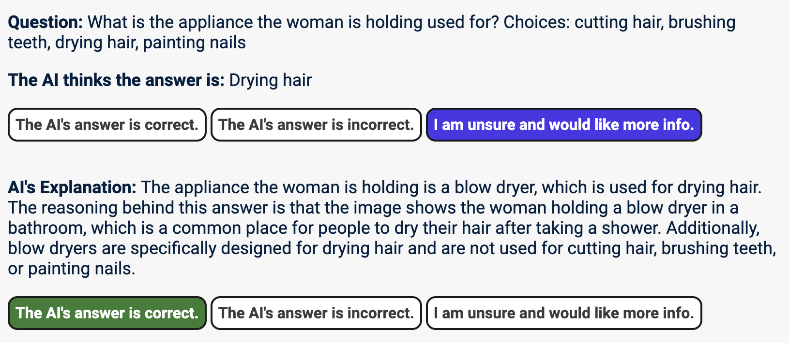

In this experiment, you are working with an AI that is answering questions about images. You cannot see the image, you can only see the AI's answer. Your task is to decide if you trust the AI's answer or not.
If your decision is correct, you gain a reward of $0.10. You will see your total reward at the end of the experiment. Your payment is $2.0 plus whatever you accumulate during this experiment.
To help you make your decision, you will see the AI's answer, along with an explanation, and some information about how reliable the explanation is. After getting each piece of additional information, you will be asked whether you think the AI is correct or not.
(-/-)
Thank you for participation in our study.
Your total reward is $0.00 (0 questions answered).
Please navigate to Prolific or with the code C18F0V8M.
Thank you for testing out our study.
Your total reward is $0.00 (0 questions answered).
Please complete the exit questionnaire for providing feedback on the user study.
Welcome to our user study. In this experiment, you are working with an AI that is answering questions about images. You cannot see the image, you can only see the AI's answer. Your task is to decide if you trust the AI's answer or not.
You will be shown a claim, which may or may not be correct. Your job is to decide if the claim is true or not. If your decision is correct, you gain a reward of $0.10, otherwise you do not get a reward.
To help you make your decision, you will be assisted by an AI. The AI works by extracting a few source passages from online, and aggregating the evidence it finds from the different passages. Based on this evidence, the AI will tell you if it thinks the claim is true or not, along with a confidence score between 0% and 100%.
If you need further help to make your decision, you also have the option to view an explanation from the AI, and/or manually examine the sources that the AI based its prediction on.
You can view the explanation/sources by clicking the respective drop-down buttons.

The explanation is a short passage generated by the AI, summarizing its reasoning behind its prediction.
The sources are a set of passages that the AI examined to come to its prediction (some of which may not actually be relevant to verifying the claim).
Examining the explanation/sources yourself may help you make your decision more confidently, but they will increase the time you spend on the task.
Viewing the explanation/sources is purely optional, you should do so if you are fine spending a bit more time to make a more confident decision.
When you are ready to make a decision, click the "I am ready to answer" button, followed by your answer. Once you say you are ready to answer, you will not be able to view the explanation/sources anymore!
If your answer is correct, you will receive a reward of $0.10. However, you will not get to see if your answer was correct or not, your cumulative reward will only be revealed to you at the end of the experiment.
The experiment will have you verify 20 claims in total.
You are not permitted to leave this tab for the duration of the experiment. This will be monitored and violation of this can result in your submission being rejected.
Do not use other external tools to help you with the answer: rely solely on your own knowledge and the AI in this study.
The average time of the experiment is 10 minutes.
You will not be paid if you already participated in this study before.
Click Start study if you understood all the instructions and want to start with the first
question.
Feel free to re-read the instructions again (Previous).
Question:
The AI thinks the answer is:
AI's Explanation:
The AI system thinks that the answer is correct because...
AI Confidence that all the visual details in the explanation are correct: xxx AI Confidence that the other options are incorrect: YYY